How to Build Your Own Website
Step-by-Step Guide
Step 4 - Create Your Basic Site
Congrats on getting this far, you are almost finished!
Now that you have completely set up and prepared the hosting environment, and you are now ready to create your site to publish! There are several ways to do this part of creating your site and the creative possibilites are virtually endless, but I will walk through the basics of using a text editor (FREE!), how to edit a pre-built template (PROVIDED!), and how to upload it to your repository (THUS PUBLISHING YOUR SITE!).
While I will walk you through exactly what to do with a pre-built, provided template, if you want to ever expand on the site or completely change it to be your own, then you will need to develop an understanding of HTML (Hypertext Markup Language), CSS (Cascading Style Sheets), and JS (JavaScript). HTML provides the content and structure to web applications, CSS provides the styling and "dressing up" of HTML, and JS provides the logic and interactivity on the front-end of web applications. Check out the "Front-End Web Languages" section on my Alternatives & Extra Content page for more information and resources to get started learning a little about these languages.
Step 4.1 - Set Up Editing Environment
Before you download the site template, you are going to need some way to edit the code. For front-end web languages like HTML, CSS, and JS, all you need is a simple text editor. My personal favorite is Atom, but there are several potential alternative. Check out the "Text Editors" section on my Alternatives & Extra Content page for some of these alternatives and more information.
Go to Atom.io and download the appropriate version for your OS.
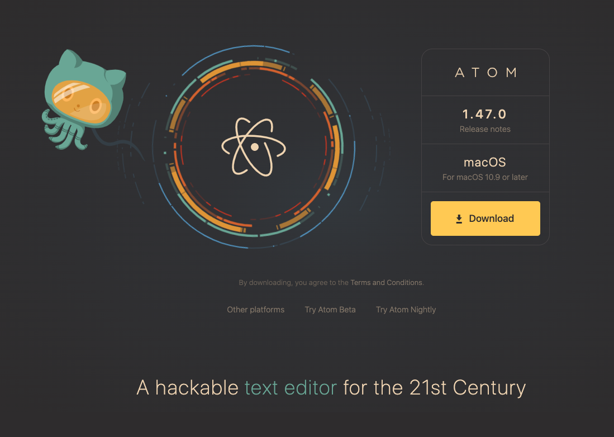After opening, it should look something like this.
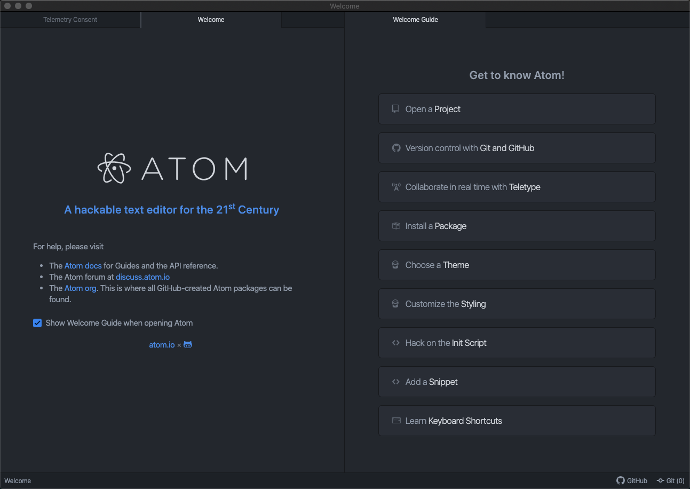Feel free to look through the welcome tabs to learn a little more, but you can close them as they are unneeded. Click "File" in the application toolbar and select "Add Project Folder".
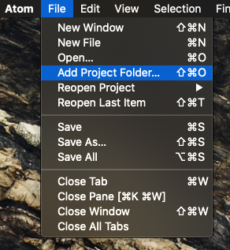Go to the file path where you cloned your repository (it defaults to the "Documents" folder, but if you can't find it you could always go into GitHub Desktop, right click your repository, and it should give the option to go to the folder it's in), select the folder, and click "Open".
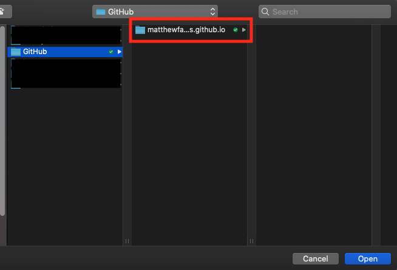Step 4.2 - Download Template
After you have successfully opened your GitHub repository in the editor (Atom in this case), then you are ready to download and edit the provided site template (check it out below!) or edit and upload your own if you would prefer!

DOWNLOAD THE PRE-BUILT TEMPLATE HERE
*As a disclaimer, the template I am providing is not of my own creation, I have merely modified it for the purposes of this tutorial and am distributing it under the identical CC BY 3.0 license it is distributed under by it's creator. My work, "Build-Your-Own-TEMPLATE", is a derivative of "Creative Commons Identity Template" by HTML5 UP, used under CC BY. "Build-Your-Own-TEMPLATE" is licensed under CC BY by Matthew Fawks.
If you're anything like me and don't trust random internet downloads, you could also get the original template from HTML5 UP and still follow along where applicable. The template I am using is called "Identity".
HTML5 UP has many various fully responsive and completely built templates and are distributed under a Creative Commons Attribution 3.0 License, so be sure and be conscious of attributing the work to HTML5 UP if you choose to use one of their templates (such as the one I am providing). Alternatively, you could pay just $19 one-time for forever attribution-free use of over 95 different templates with Pixelarity.
Step 4.3 - Edit the Template
After downloading the .zip file, extract it and move the extracted contents to your GitHub repository folder wherever you decided to clone your repository to on your PC. Make sure that you put the contents themselves and not just the folder into the repository as the "index.html" file must be in the root directory (ex. YOURUSERNAME.github.io/index.html). This file cannot be renamed from "index.html" or removed from the root directory or your website will not function. This is because this file is the default server path that is called when your site is accessed. See this article for more explanation this.
The contents you moved over should now appear in the left-hand bar of Atom. If they don't, you could just manually go to the "index.html" file, right click it, and open it in Atom. We are pretty much just going to be workin in the "index.html" file for this simple webpage.
easy way to edit is open in browser, remember that all changes made will NOT show up in your actual site unti lyou push thrw[FILL IN THIS AREA BETTER] 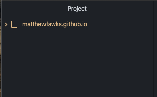 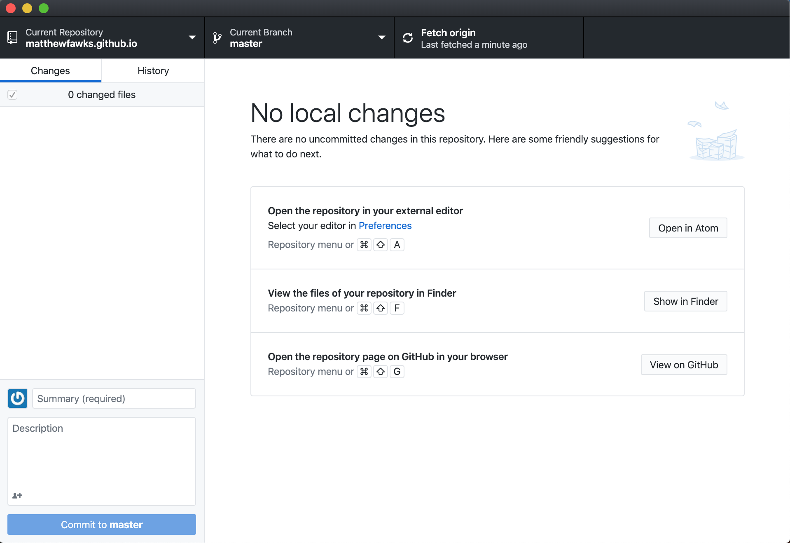
As a general overview, the file will be started with the "< !DOCTYPE HTML >" tag, and then the entire document should be enclosed in the "< html >" tags. From here, there are two sections: the "< head >" and the "< body >". The head will contain things like the name on the page tab, style sheet references, analytics tags, and other various background items. The body is where all of your website content will be placed and is what your browser will display to visitors.
Here is brief overview of the HTML format structure we will working in:
<!DOCTYPE HTML>
<html>
<head>
<link rel="stylesheet" href="assets/css/main.css">
</head>
<body>
<p>Hello World!</p>
<script src="assets/js/main.js"></script>
</body>
</html>
Notice how the folders work for the "href" and the "src". In the actual folder on your computer (or server), the main.css file should be found in a folder called "css" in the "assets" folder that would be in the root directory. Say, though, that you were in a subfolder called "images" but wanted to reference the same css file, then you would need to add two dots to the beginning to move up a level like this "../assets/css/main.css". The file path of your files or images will be important to know as we edit the code reference said files or images.
Let's move from the top of the file down. I have inserted comments in various places either giving a short description of what the element is or indicating where to add your own information.
The first element is updating the favicon image. This the image that shows up next to the tab name on the tab in your browser. In the template, you will notice that it refers to a file at the location "images/favicon.png". This basically means that if you go to the "images" folder, you should expect to find an image titled "favicon.png". To replace the favicon with your own, simply either replace the favicon in there with a file with the same name or just change the reference to be to your file that you add to the folder. To quickly create a favicon, check out favicon.io.
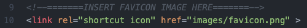Next, we see the beginning of the document as indicated by the html tag. Replace the "[TAB NAME]" text with what you want to appear on the tab of your webpage.
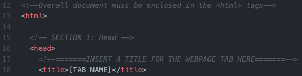You don't need to edit anything in the following image, but note that these are necessary for setting up the document and linking to the CSS file that formats this webpage.
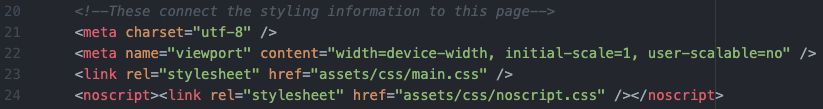Here I have put a spot where you would add a Google Analytics tag if you wanted to track traffic to your webpage. See the following Google support page for assitance in getting this set up.
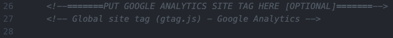Now we will move into the body section of the file where the primary content for your site goes. Go ahead and fill in your name on line 45 in place of "[FILL IN NAME]" and your current position or whatever other phrase or text you would like on line 48 in place of "[FILL IN CURRENT POSITION/TITLE]".
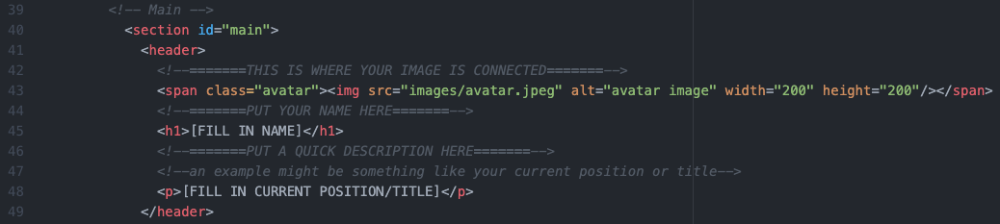For the next part, you could technically link to whatever document you want and would just need to change the "Resume" text to what you want it to say. Nevertheless, to add your resume you just need to copy your resume into your root folder and then replaece the "#" with the exact name of your resume file (ex. "resume.pdf").
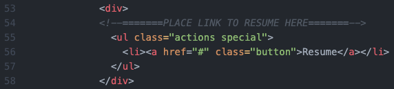This next part refers to the link buttons shown under the resume button. I already have 3 different ones provded, but feel free to use any of the others provided by simply removing the "<!--" and "-->" (which are how you add comments to html code) at the beginning and end of the element. To add your link, just replace the "#" with the link you want it to take you to. If the symbol you want isnt displayed, the symbols in the template are from Font Awesome (this uses the Free Version 5.9.0) and you can search for other available icons on fontawesome.com.
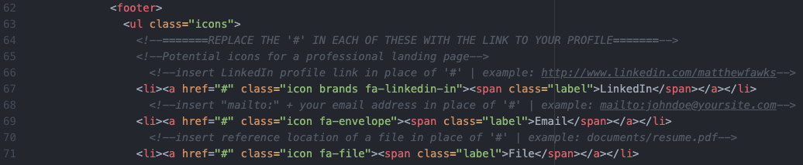The final part of this html file is footer, which includes the copyright and attributions necessary for the page. Simple replace "[YOUR NAME]" with your name.
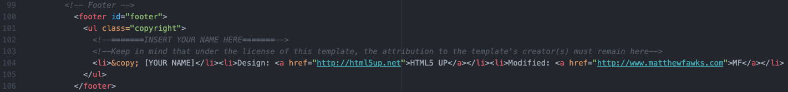To change the background image (although you could just replace the image in the file with one of the identical name) or background gradiant overlay, you will need to go into the main.css file found at assets/css/main.css. The below are found at lines 115 and lines 129, and you would need to change the rgb values in all the spots of these parts where they appear. Note that the "rgba" attribute takes the normal 3 rgb values as the first three inputs and the last input is the opacity value (1 being fully opaque and 0 being fully transparent). To easily choose colors and get their RGB values, simply Google "color picker". The background image is found in the "url" attribute.
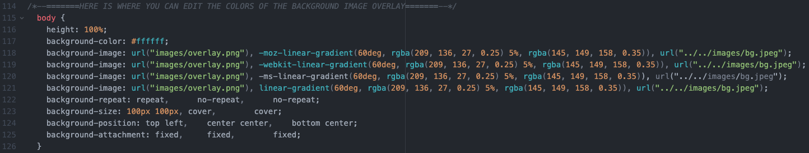 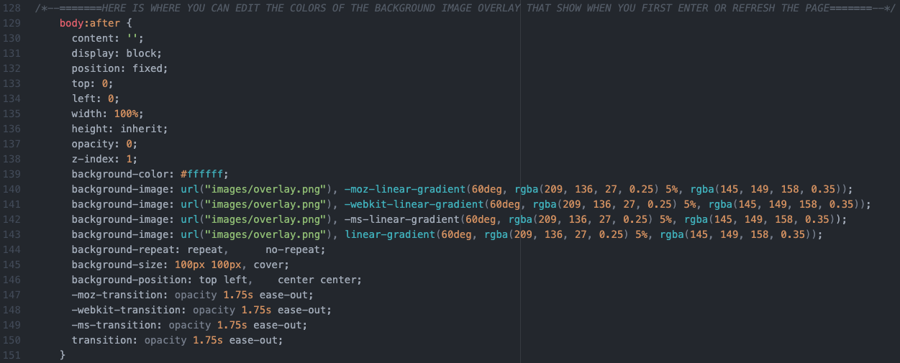Good job, you have officially made the template customized to you! Make sure you save all of your changes and move onto the publishing stage.
Step 4.4 - Upload Changes & Confirm Website Works
At this point, you have made all of the changes necessary to the template and are ready to upload everything from your PC to your GitHub Pages repostitory! As previously mentioned, none of the changes you have made to the cloned repository on your desktop will show up on your online repository until you both commit AND push them to origin.
This process is fairly simple as the GitHub Desktop client automatically keeps track of all the changes made your repository on your PC. step instructions - show how to use GitHub Desktop to upload Changes show example finished version feel free to get in touch with me if you are unable to make something work.
stage conclusion